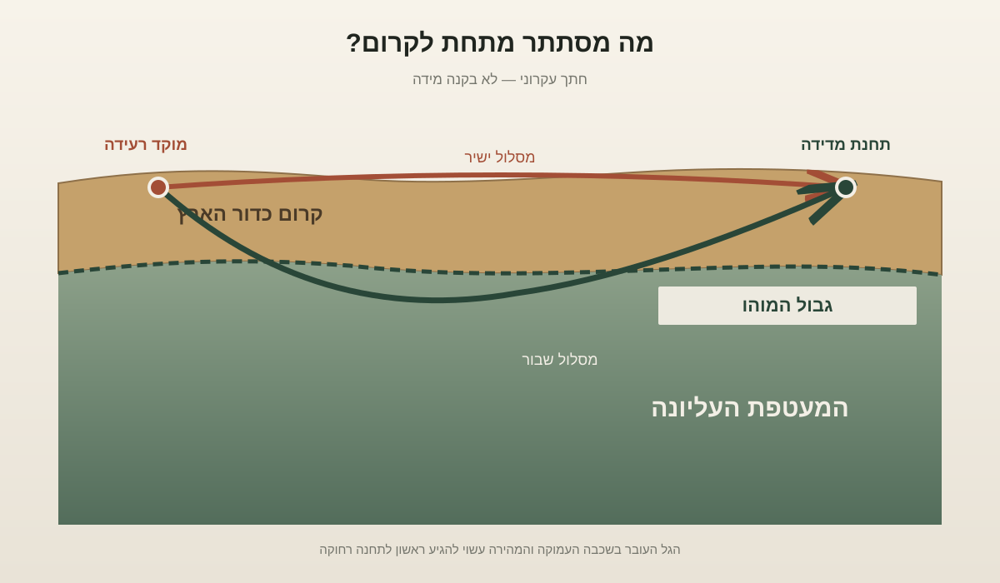
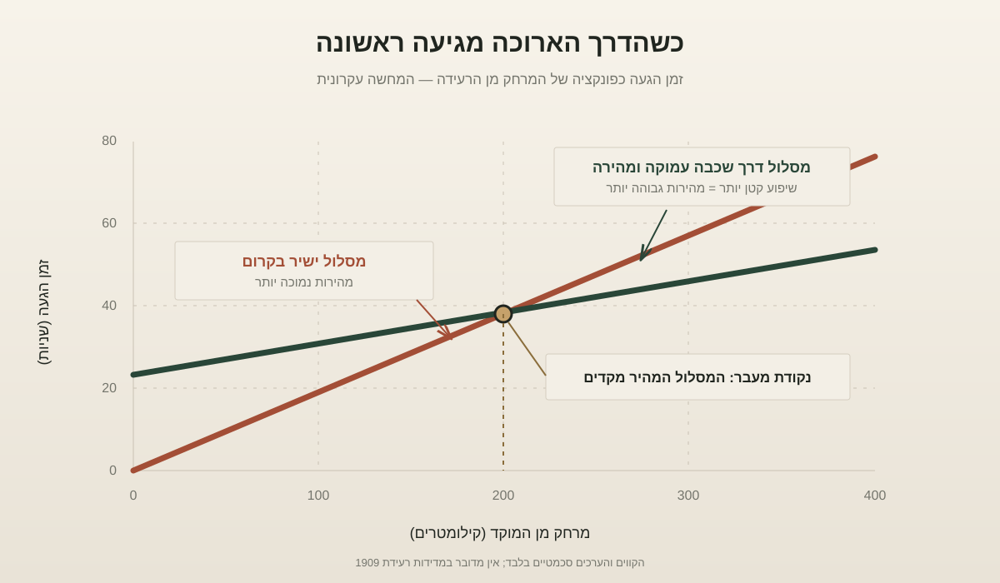

גאופיזיקה · פיזיקה · היסטוריה של המדע
הגבול שמתחת לרגלינו: איך רעידת אדמה אחת חשפה את מעטפת כדור הארץ
ב־8 באוקטובר 1909 רעדה האדמה ליד זאגרב. סייסמוגרפים בתחנות שונות רשמו את הגלים, אבל דווקא ההבדל בזמני הגעתם חשף דבר שלא היה אפשר לראות: שכבה עמוקה שבה הגלים נעים מהר יותר, והגבול שמפריד בין קרום כדור הארץ למעטפת.
אנחנו חיים על פני כדור הארץ כאילו הקרקע היא עובדה פשוטה: משטח יציב, מוצק, מוכר. אבל מתחת למעטפת הדקה שעליה עומדים הרים, ערים ואוקיינוסים מסתתר עולם שאין לנו דרך רגילה לצפות בו. הקידוחים העמוקים ביותר חדרו רק קילומטרים ספורים אל תוך קרום שעוביו עשוי להגיע לעשרות קילומטרים. את רוב מה שאנחנו יודעים על פנים הארץ למדנו לא באמצעות חלון שנפתח אל מתחת לרגלינו, אלא באמצעות הקשבה לרעידות אדמה.
אחד האנשים שהפכו את ההקשבה הזאת למדע היה הגאופיזיקאי הקרואטי אנדריה מוהורוביצ'יץ' (Andrija Mohorovičić). הוא לא גילה מערה תת־קרקעית ולא מצא סדק שאפשר להצביע עליו. הוא זיהה דפוס בזמני ההגעה של גלים סייסמיים, והסיק ממנו שהחומר שממנו בנוי כדור הארץ משתנה בעומק מסוים. הגבול הזה, בין הקרום למעטפת, נקרא על שמו: אי־הרציפות של מוהורוביצ'יץ', או בקיצור מוהו (Moho).
מדען של תחנות מדידה, לא רק של רעיונות
מוהורוביצ'יץ' נולד ב־1857 בוולוסקו, עיירת חוף באזור איסטריה של ימינו. הוא למד מתמטיקה ופיזיקה בפראג, סיים את לימודיו ב־1879, ובהמשך לימד בבתי ספר בזאגרב ובאוסייק. ב־1882 הגיע לבית הספר הימי בבקאר, שם לימד בין השאר מטאורולוגיה. שבע שנים לאחר מכן הקים במקום תחנה מטאורולוגית, ובה החל לעסוק באופן שיטתי בתצפיות על מזג האוויר, עננים ותנועת האוויר. ב־1892 נעשה מנהל המצפה המטאורולוגי בזאגרב, ובהמשך הרחיב את רשת התחנות שפעלה תחת אחריותו. האנציקלופדיה הקרואטית מתארת אותו כחוקר שפעל במקביל במטאורולוגיה, בגאופיזיקה ובסייסמולוגיה.
הפרט הזה חשוב, מפני שההישג המפורסם שלו לא נולד מהברקה מבודדת. הוא צמח מתוך תרבות של מדידה. מוהורוביצ'יץ' עסק גם בשאלה שנראית היום כמעט מובנת מאליה: איך מבטיחים שמדידות מתחנות שונות מתייחסות לאותו רגע? ב־1892 הנהיג בזאגרב שירות של זמן מדויק, תחילה על בסיס תצפיות אסטרונומיות, ומ־1913 באמצעות קליטת אותות רדיו מפריז. כאשר מנסים לחשב מהירות של גל שעובר בין תחנות מרוחקות, אפילו שגיאה קטנה בשעון עלולה להפוך להבדל גדול במסקנה.
העניין שלו ברעידות אדמה התחזק בעקבות הרעש שפגע בזאגרב ב־1880. ב־1901 הקים בעיר תחנה סייסמולוגית, ובשנים 1908–1909 הותקנו בה שני סייסמוגרפים מתקדמים לתקופתם. סייסמוגרף הוא מכשיר הרושם את תנועת הקרקע לאורך זמן. הוא אינו מצלם את הרעידה; הוא מתרגם את התנודות לקו שאפשר למדוד, להשוות ולנתח. מבחינתו של מוהורוביצ'יץ', רישום כזה היה לא רק עדות לכך שהאדמה זזה, אלא מסר שמגיע ממעמקי הכוכב.
רעידת האדמה ששלחה שני מסרים
ב־8 באוקטובר 1909 התרחשה רעידת אדמה בעמק נהר הקופה, כ־39 קילומטרים מדרום־מזרח לזאגרב. מוהורוביצ'יץ' לא הסתפק ברישום שנקלט בעירו. הוא השווה סייסמוגרמות שנרשמו בתחנות רבות באירופה. לפי הסיכום ההיסטורי של הוצאת אוניברסיטת קיימברידג', הוא בחן נתונים מ־29 תחנות והסיק שקיים ממשק בעומק של כ־50 קילומטרים: מעליו הגלים נעו במהירות מוערכת של כ־5.7 קילומטרים בשנייה, ומתחתיו בכ־7.8 קילומטרים בשנייה. אלה היו אומדנים היסטוריים מתוך הניתוח שלו, לא ערכים אחידים לכל כדור הארץ. הפרק על סייסמולוגיית פיצוצים בתולדות מכון קרנגי מסביר גם מדוע לקח עוד עשרות שנים עד שהמבנה הזה אומת באופן נקי יותר.
כדי להבין את התגלית צריך להכיר שני סוגים של גלים סייסמיים. גלי P, המכונים גלים ראשוניים, הם גלי דחיסה: החומר רוטט קדימה ואחורה בכיוון התקדמות הגל, בדומה לאופן שבו קול מתפשט באוויר. הם המהירים מבין גלי הגוף ולכן מגיעים בדרך כלל ראשונים לתחנת המדידה. גלי S, המכונים גלי גזירה, מזיזים את החומר בניצב לכיוון התקדמות הגל והם איטיים יותר. ההבדל בין סוגי הגלים ובין זמני הגעתם הוא אחד הכלים הבסיסיים של הסייסמולוגיה, כפי שמסביר המכון הגאולוגי של ארצות הברית.
מוהורוביצ'יץ' הבחין שבתחנות מסוימות נרשמו הגעות של גלים שלא התאימו לתמונה פשוטה של גל אחד הנע בתוך חומר אחיד. בתחנות שמרוחקות יותר מכ־200 קילומטרים ממוקד הרעש הגיעו גלים מוקדם מכפי שהמודל הקיים חזה. ההסבר שלו היה נועז אך חסכוני: אין צורך להניח שמדובר ברעידה נוספת. אותו גל יכול להגיע לתחנה בשני מסלולים — מסלול ישיר דרך הקרום, ומסלול עמוק יותר, שבו הוא נשבר בגבול בין חומרים ונע בחלק ניכר מדרכו בתוך שכבה מהירה יותר.

כאן נכנסת לתמונה תופעת השבירה (refraction): כאשר גל עובר מחומר אחד לחומר אחר, ומהירותו משתנה, גם כיוון התקדמותו עשוי להשתנות. זהו עיקרון המוכר גם מאור שעובר מאוויר לזכוכית. אם השכבה העמוקה מוליכה גלים מהר יותר, מסלול ארוך יותר שעובר דרכה עשוי להגיע לתחנה רחוקה לפני המסלול הקצר יותר שנשאר כולו בקרום האיטי. התוצאה נראית כמעט פרדוקסלית: הדרך הארוכה מנצחת, מפני שחלק ממנה עובר בכביש מהיר יותר.
ההסבר הזה שינה את התמונה של פנים הארץ. עד אז היה אפשר לתאר את מהירות הגלים כאילו היא משתנה בהדרגה עם העומק. מוהורוביצ'יץ' הראה שהנתונים מתאימים טוב יותר למעבר חד יחסית בין שכבה עליונה לשכבה תחתונה, בעלות תכונות פיזיקליות שונות. הוא לא ראה את הגבול; הוא זיהה את חתימתו על פני השטח. המאמר המקורי שלו מ־1910, רעידת האדמה של 8 באוקטובר 1909, זמין בתרגום בכתב העת Geofizika.
המוהו אינו קליפה אחידה
הגבול שקיבל את שמו אינו נמצא בעומק קבוע. מתחת לקרקעית האוקיינוס הוא עשוי להימצא בעומק של כחמישה עד עשרה קילומטרים, ואילו מתחת ליבשות הוא נמצא בדרך כלל בעומק של כמה עשרות קילומטרים. מתחת לרכסי הרים עבים במיוחד הקרום עשוי להגיע לעומקים גדולים בהרבה. מוהורוביצ'יץ' העריך כ־54 קילומטרים באזור זאגרב; מחקרים מאוחרים הראו שהקרום היבשתי יכול להשתנות מכ־15 קילומטרים ועד יותר מ־70 קילומטרים באזורים מסוימים. סקירה של המכון הגאולוגי האמריקאי מתארת את השונות הזאת ומגדירה את המוהו באמצעות העלייה במהירות גלי P.
חשוב לא פחות להבין מה נמצא מתחת לגבול. המעטפת אינה אוקיינוס של לבה נוזלית. רובה המכריע עשוי סלע מוצק, אך בטמפרטורות ובלחצים העצומים של פנים הארץ הוא יכול להתעוות ולזרום באיטיות לאורך מיליוני שנים. הקרום והמעטפת העליונה המוצקה יוצרים יחד את הליתוספרה — המעטפת הקשיחה שמחולקת ללוחות טקטוניים. לכן המוהו אינו תחתית הלוח הטקטוני: הוא הגבול בין שני סוגי סלע, בעוד שתחתית הליתוספרה מוגדרת לפי שינוי בהתנהגות המכאנית של החומר. אלה שתי חלוקות שונות של אותו עולם תת־קרקעי. הסקירה על המעטפת ב־National Geographic Education מסבירה את ההבחנה בין המוהו לבין הגבול שבין הליתוספרה לאסתנוספרה.
מכדור הארץ אל בעיית ההסקה
התגלית של מוהורוביצ'יץ' היא דוגמה מרשימה לבעיה מדעית מסוג מיוחד: בעיה הפוכה (inverse problem). בבעיה רגילה אנחנו יודעים מהו המבנה ומחשבים מה תהיה התוצאה. בבעיה הפוכה אנחנו רואים את התוצאה — זמני הגעה, עוצמות וצורות של גלים — ומנסים להסיק מהו המבנה שיצר אותה. אין לנו גישה ישירה אל המעמקים, ולכן אנחנו בונים מודל של החומר התת־קרקעי מתוך האופן שבו הוא משפיע על אותות שעוברים דרכו.
העיקרון הזה התפתח במאה העשרים לסייסמולוגיה של טומוגרפיה (seismic tomography): שיטה המשתמשת במסלולים רבים של גלים כדי לשחזר תמונה תלת־ממדית של מהירויות הגלים בתוך כדור הארץ. הדמיון לטומוגרפיה רפואית אינו מקרי — בשני המקרים אוספים מדידות מכיוונים שונים ומנסים לשחזר מבנה שאי אפשר לראות ישירות. אבל אין זו תמונת רנטגן פשוטה: גלים סייסמיים מושפעים מהרכב הסלעים, מהטמפרטורה, מהלחץ ומהמבנה, ומספר מודלים שונים עשויים להסביר חלק מן הנתונים. לכן ריבוי תחנות, סוגי גלים ושיטות מדידה אינו מותרות; הוא הדרך לצמצם את מרחב ההסברים האפשריים. דוגמה מודרנית למפת מהירויות תת־קרקעיות מוצגת בידי USGS במודל טומוגרפיה סייסמית של מערב ארצות הברית.

כאן מתברר גם מדוע הסיפור אינו מסתיים ב־1909. גילוי מדעי אינו נעשה אמת מוסכמת רק מפני שמדען הציע הסבר אלגנטי. לפי ההיסטוריה של הסייסמולוגיה שפורסמה בהוצאת קיימברידג', עד 1948 עדיין לא הייתה למוהו אימות חד וברור בכלים שהיו זמינים. מספר התחנות היה קטן מדי במרחקים הנחוצים, מהירות הרישום של המכשירים לא תמיד הספיקה, השעונים והמרחקים לא היו מדויקים דיים, והמכשירים בתחנות השונות לא היו אחידים. כלומר, המגבלה לא הייתה רק בתיאוריה — היא הייתה גם בתשתית המדידה. התגלית הקדימה את יכולת המדידה של הקהילה המדעית לאמת אותה באופן מלא.
מהמוהו אל קרקעית האוקיינוס
ככל שהבינו את משמעות הגבול, התעוררה שאלה כמעט הנדסית: אם אי אפשר לראות את המוהו, מדוע לא לקדוח אליו? על היבשה הקרום עבה מאוד, אבל בקרקעית האוקיינוס הוא דק יותר. בתחילת שנות השישים יצא לדרך Project Mohole — משחק מילים שחיבר את שם המדען למילה האנגלית hole, כלומר חור. הרעיון היה לקדוח דרך הקרום האוקייני ולהגיע אל תחילת המעטפת, כדי לקחת דגימות ישירות במקום להסיק על ההרכב מתוך גלים בלבד.
ב־1961 הצליחו אנשי הפרויקט להחזיק את אסדת הקידוח CUSS I במיקום מדויק יחסית בלב ים באמצעות מערכת מיקום דינמית, הישג הנדסי חשוב בפני עצמו. אבל הקידוח הניסיוני חדר רק כ־183 מטרים מתחת לקרקעית הים, רחוק מאוד מן המעטפת — כך עולה גם מדוח הקרן הלאומית למדע האמריקאית לשנת 1961, שתיעד דגימות בזלת מעומק של 601 רגל מתחת לקרקעית. הפרויקט הסתבך בעלויות, במחלוקות ניהוליות ובקשיים הנדסיים, והופסק ב־1966 בלי להגיע ליעדו. ובכל זאת, הוא סייע להניח את היסודות לקידוח מדעי בים העמוק, שהפך לכלי מרכזי במחקר הקרום, התפשטות קרקעית האוקיינוסים ותנועת הלוחות. דוח הקרן הלאומית למדע האמריקאית לשנת 1961 מאמת את עומק דגימות הבזלת; מכון וודס הול לאוקיינוגרפיה מתאר כיצד ניסיון כושל להגיע למוהו הוליד תשתית מחקרית מוצלחת בהרבה; ההיסטוריה של תוכנית הקידוח המדעי הבינלאומית מציבה את הפרויקט בראשית המסורת הזאת.
הסיפור הזה מחבר בין שלושה עולמות שבדרך כלל נלמדים בנפרד. הראשון הוא הפיזיקה של גלים: שינוי בתכונות החומר משנה את מהירות התנועה ואת מסלול הגל. השני הוא המתמטיקה של הסקה: מודל של פנים כדור הארץ נבנה מתוך מדידות עקיפות, ולא מתוך תצפית ישירה. השלישי הוא ההיסטוריה של הטכנולוגיה: גם רעיון נכון זקוק למכשירים, לשעונים מסונכרנים, לרשת תחנות ולמוסדות שמסוגלים לתחזק אותם. מוהורוביצ'יץ' עבד בדיוק בצומת הזה.
אולי לכן המוהו הוא יותר משם של גבול גאולוגי. הוא מזכיר לנו עד כמה הידע שלנו על העולם תלוי ביכולת לתרגם תופעה חולפת — רעידת אדמה — למדידה מדויקת, ואז להפוך מדידות רבות להסבר על מבנה שאיש לא ראה. כדור הארץ אינו מסתיר את פנים גופו לחלוטין; הוא שולח אל פני השטח גלים. צריך רק לדעת להקשיב להם, ולדעת גם מתי הרישום שבידינו עדיין אינו מספיק.
חמישה דברים שכדאי לזכור
- אנדריה מוהורוביצ'יץ' זיהה ב־1909 את הגבול בין קרום כדור הארץ למעטפת מתוך ניתוח גלים סייסמיים.
- הוא הבחין שגלים בתחנות רחוקות הגיעו מוקדם מן הצפוי — סימן לכך שחלק ממסלולם עבר בשכבה עמוקה ומהירה יותר.
- המוהו אינו בעומק אחיד: הוא רדוד מתחת לאוקיינוסים ועמוק בהרבה מתחת ליבשות ולהרים.
- המוהו הוא גבול בין הקרום למעטפת; הוא אינו הגבול התחתון של הליתוספרה, הכוללת גם חלק מן המעטפת העליונה.
- התגלית נשענה על רשת תחנות, מכשירים מדויקים וסנכרון זמן — והאימות שלה נמשך עשרות שנים.
שלוש שאלות למחשבה
- מתי מדידה עקיפה יכולה להיחשב ראיה חזקה יותר מתצפית ישירה, ומדוע?
- אילו תגליות מדעיות אחרות התאפשרו רק לאחר שנבנתה תשתית מדידה רחבה, ולא בעקבות רעיון יחיד?
- מה נחשב בעינינו "גבול" בטבע: קו חד במרחב, או מעבר שאנו מגדירים לפי שינוי מדיד בתכונות?
לקריאה נוספת
- האנציקלופדיה הקרואטית — אנדריה מוהורוביצ'יץ': ביוגרפיה, עבודתו במטאורולוגיה, שירות הזמן המדויק וניתוח רעידת 1909.
- Bonini & Bonini, 1979, Eos: סקירה היסטורית של הגילוי והרעידה בזאגרב.
- Louis Brown, Centennial History of the Carnegie Institution: מדוע אימות המוהו התעכב, וכיצד התפתחה סייסמולוגיית הפיצוצים.
- USGS — Seismic velocity structure of the continental lithosphere: נתוני מהירות גלים ועובי הקרום היבשתי.
- Andrija Mohorovičić, Earthquake of 8 October 1909: המאמר המקורי בתרגום שפורסם בכתב העת Geofizika.
- IODP — History: התפתחות הקידוח המדעי בים בעקבות Project Mohole.
- NSF, 11th Annual Report (1961): תיעוד רשמי של ניסוי הקידוח ודגימות הבזלת מקרקעית האוקיינוס.